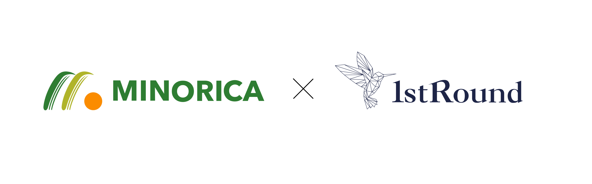

国内最大規模の技術起業支援プログラム
「1st Round」に採択されました
Press
株式会社MINORICA（本社：東京都文京区、CEO: 平田裕也、CTO: 長浜義典）は、東京大学協創プラットフォーム開発株式会社（本社：東京都文京区本郷、代表取締役社長 植田浩輔、以下、「東大IPC」）が運営する国内最大規模を誇る大学・研究機関共催のアクセラレータープログラム「1stRound」の第12回支援先として採択されました。
植物強化技術の力で、異常気象下でも農業生産を安定化
当社は、世界的な食糧問題の解決に挑む、2025年に設立した農業スタートアップです。近年、長期間の高温や乾燥といった異常気象が常態化し、農業生産現場はかつてないほどの脅威にさらされています。日本国内でも、米やキャベツをはじめとする主要作物の生育被害が、不安定な価格変動の大きな要因となっています。
こうした課題に対し、当社CTOの長浜義典は、50年もの歳月をかけて、植物自体の免疫力を高める「植物ワクチン技術（採択当時の呼称）」の確立に成功しました。この技術は、植物に強力な防御特性を付与することで、砂漠や塩害地域のような過酷な環境下での農業生産を可能にします。既に国内100以上の農家・20品種で実証が行われ、生育被害の抑制だけでなく、収穫量の増加や高糖度化といった品質改善にも成功しています。
今後は、国内外の大手農業生産・食品加工グループと協業することで、当社の技術がより多くの地域の食糧課題解決に活用されるよう展開して参ります。
この度の「1stRound」採択による資金支援、事業連携、各専門家によるサポート等の多面的な支援を通じ、大規模な生産体制の構築およびパートナー企業/自治体の拡充を目指します。
採択総評
株式会社MINORICA 代表取締役CEO 平田裕也のコメント
私たちは、「植物ワクチンを社会実装し、世界の食糧問題を解決する」というミッションを掲げています。このミッションを達成するためには、農業、食品加工、地方自治体の皆様をはじめ、様々な業界の皆様との連携が不可欠です。引き続き「1stRound」の支援を最大限に活用しながら、事業活動に邁進して参ります。
東京大学協創プラットフォーム開発株式会社 1stRound Director 長坂英樹氏の総評
2050年の世界人口が100億人に到達すると予測される中、気候変動の影響も加わり人類の農業生産は大きな脅威にさらされています。スタンフォード大学の研究によれば、稲の収量は2100年までに最大40％減少する可能性があり、他の主要作物でも2050年までに3〜12％の収量低下が懸念されています。このままでは食糧危機は不可避です。ミノリカは「植物ワクチン」という独自技術でこの課題に挑みます。苗期から定期投与することで植物にストレス耐性を付与し、高温・乾燥といった逆境下でも安定した生育を実現します。既に国内100以上の農家・20品種で実証が行われ、収量最大30％増加、果樹糖度最大3ポイント向上といった成果が得られています。
本技術は国内農産業の収益改善にとどまらず、地球全体規模での食糧不足を緩和する基盤技術としてのポテンシャルを有しております。同社は国内大手食品企業と連携しつつ、中東や豪州など乾燥・塩害に直面する地域への展開も視野に入れており、グローバルに食糧安全保障へ寄与する可能性を秘めています。今後のミノリカの取り組みが、気候変動時代の農業を再定義し、人類の未来を支える大きな力となることを期待しております。